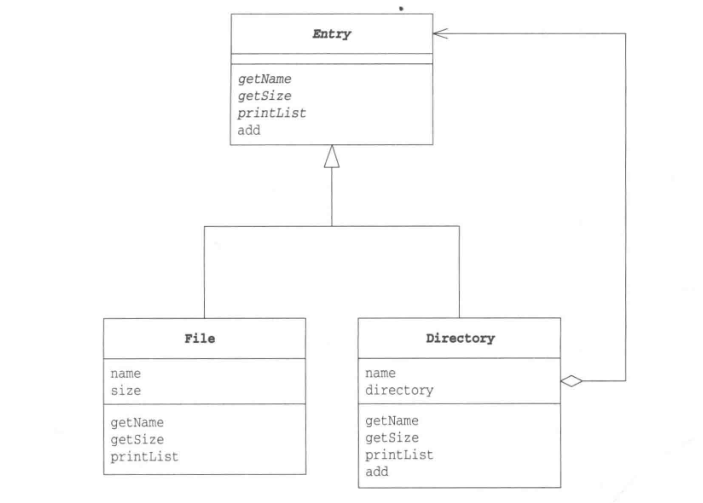

2018-1-8设计模式(四)————————Composite模式学习笔记
结构
组合模式是组合多个对象形成树形结构以表示具有“整体—部分”关系的层次结构。
也能够使容器和内容保持一致性，创造出递归调用。以下类图:

以下通过代码模拟组合模式的运用场景，不会真的在文件夹中生成代码，用于测试。
代码实现
Entry类(共享类)
public abstract class Entry {
public abstract String getName();//获得名字
public abstract int getSize();//获得大小
public Entry add(Entry entry);
public void printList(){
printList("");
}
protected abstract void printList(String prefix);//为一览加上前缀并显示目录条目一览
public String toString(){
return getName() +"("+getSize()+")";
}
}
Directory类(文件夹类)
public class Directory extends Entry{
private String name;//文件夹名字
private ArrayList directory =new ArrayList<>();//文件夹中目录条目的集合
public Directory(String name){
this.name = name;
}
@Override
public String getName() {
return name;
}
@Override
public int getSize() {//获取大小 通过迭代器
int size = 0;
Iterator it = directory.iterator();
while(it.hasNext()){
Entry entry = (Entry)it.next();
size += entry.getSize();
}
return size;
}
public Entry add(Entry entry){//增加目录条目
directory.add(entry);
return this;
}
@Override
protected void printList(String prefix) {//增加目录条目一览
System.out.println(prefix +"/"+ this);
Iterator it = directory.iterator();
while(it.hasNext()){
Entry entry = (Entry)it.next();
entry.printList(prefix+"/"+ name);
}
}
}
File类(单独的文件类)
public class File extends Entry{
private String name;
private int size;
public File(String name,int size){
this.name = name;
this.size = size;
}
@Override
public String getName() {
return name;
}
@Override
public int getSize() {
return size;
}
@Override
protected void printList(String prefix) {
System.out.println(prefix +"/"+ this);//this 相当于 this.toString() 和 toString()
}
}
Main类(测试)
public class Main {
public static void main(String[] args){
System.out.println("目录创建中 ...");
Directory rootdir = new Directory("root");
Directory bindir = new Directory("bin");
Directory tmpdir = new Directory("tmp");
Directory userdir = new Directory("user");
rootdir.add(bindir);
rootdir.add(tmpdir);
rootdir.add(userdir);
bindir.add(new File("vi",10000));
bindir.add(new File("latex",20000));
rootdir.printList();
System.out.println("");
System.out.println("目录文件创建中 ...");
Directory yuki = new Directory("yuki");
Directory banako = new Directory("banako");
Directory tomura = new Directory("tomura");
userdir.add(yuki);
userdir.add(banako);
userdir.add(tomura);
yuki.add(new File("diary.html",100));
yuki.add(new File("Composite.java",200));
banako.add(new File("memo.text",300));
tomura.add(new File("game.doc",400));
tomura.add(new File("junk.mail",500));
rootdir.printList();
}
}
运行结果


组合模式解耦了客户程序与复杂元素内部结构，从而使客户程序可以像处理简单元素一样来处理复杂元素。上面例子文件和文件夹都执行相同的接口，这是组合模式的关键。通过执行相同的接口，就可以用相同的方式对待文件和文件夹，从而实现将文件或者文件夹储存为文件夹的子级元素。
关键字词：设计模式、Composite、文件、嵌套